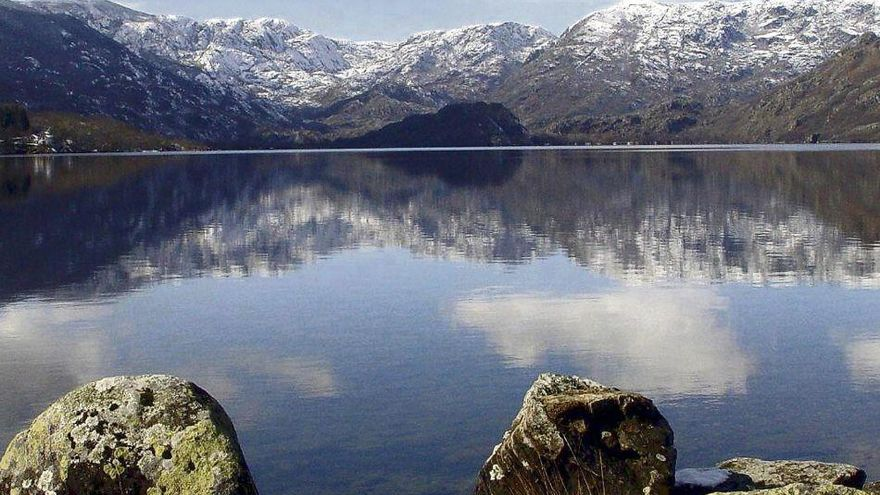

Zamora
Cultura
La cultura popular de la provincia de Zamora se manifiesta en una variada muestra de fiestas y costumbres, todas ellas generalmente ligadas a su gastronomía tradicional.
La Semana Santa de Zamora es una manifestación de religiosidad popular católica que celebra anualmente la pasión, muerte y resurrección de Cristo. Es el más relevante acontecimiento religioso, cultural y social de la ciudad de Zamora, siendo su desarrollo reflejo de su propia historia y evolución. Con un origen que se remonta a 1273, es una de las más antiguas y prestigiosas de España, además de contar con una notable repercusión a nivel internacional. La Semana Santa zamorana cuenta desde 1957 con su propio Museo de Semana Santa, un espacio único en España creado con el fin de conservar y exhibir al público los pasos procesionales de las cofradías, hasta entonces alojados en diversos locales.
Además de poseer una imaginería de gran valor artístico y patrimonial, destaca por sus marcadas señas de identidad, como son la devoción, la sobriedad, la austeridad, el silencio, el respeto y el fervor con el que se vive tanto por parte de los cofrades como por parte de los espectadores. Debido a todo esto la Pasión zamorana fue declarada de Interés Turístico Internacional en 1986.
En 2015 la Junta de Castilla y León con la supervisión del Ministerio de Cultura del Gobierno de España la declaró Bien de Interés Cultural, siendo así la primera Semana Santa de España en ostentar dicha declaración. Tras este último reconocimiento la Semana Santa zamorana aspira a ser reconocida como patrimonio cultural inmaterial de la Humanidad por la UNESCO.
Volver al inicio
Geografía
La provincia de Zamora cuenta con una superficie de 10 561 km² y limita al norte y sur con las provincias de León y Salamanca respectivamente, al este con la de Valladolid y al oeste con la provincia gallega de Orense y con el distrito portugués de Braganza.
Comprendida en la submeseta norte, su territorio presenta numerosos contrastes. Destaca una zona montañosa al noroeste, ocupada por parte de los montes de León, con alturas que llegan a los 2127 m (Peña Trevinca). En la zona occidental de la provincia, la sierra de la Culebra registra alturas de hasta 1241 m (Peña Mira) y acoge en su seno la reserva regional de caza de su mismo nombre, con importantes poblaciones de lobo ibérico (las más significativas de la península), ciervos y jabalíes, entre otros. Al suroeste de la provincia el río Duero discurre encajonado en una garganta denominada los Arribes del Duero con desniveles de hasta 300 m, constituyendo una frontera natural con Portugal. La zona centro, este y sur presenta la típica llanura meseteña, con excepción de los parajes-miradores de Peñausende, denominados Teso Santo y "El Castillo", ambos cercanos a los 1000 m de altura sobre el nivel del mar.
Su altura mínima se registra al suroeste del municipio de Fermoselle sobre los 330 m y su altura máxima en Peña Trevinca 2127 m en el municipio sanabrés de Porto.
Clima
El centro, sureste y noreste de la provincia cuenta con un clima mediterráneo continentalizado, es un clima seco y con temperaturas bajas en invierno, muy calurosas en verano y suaves en las estaciones intermedias. Al noroeste de la provincia, en la comarca de Sanabria, el clima es notablemente más templado y húmedo, al contar con una notable influencia atlántica, aunque en las zonas más elevadas se dan las características del clima de montaña.
Por lo general las temperaturas medias anuales de la provincia de Zamora son relativamente bajas, oscilando entre los 8 °C de Sanabria y los 12,5 °C del entorno de Zamora, la capital provincial. Las precipitaciones son en general escasas en toda la provincia con valores normalmente inferiores a 400 mm/año, solo Sanabria se escapa a esta tendencia seca, llegando a valores de hasta 1400 mm/año, buena parte de ellos en forma de nieve. Así cuanto más al norte y oeste nos encontremos las temperaturas serán más bajas y la pluviosidad mayor.
Volver al inicio
Historia
La historia de la provincia de Zamora es una parte de la historia de España que se localiza en el área geográfica aproximada de la actual provincia de Zamora. Hubo estudiosos relevantes de la historia de la provincia, como el fraile medieval Juan Gil de Zamora, en el siglo xvi Florián de Ocampo (que ha dado nombre al Instituto de Estudios Zamoranos), e historiadores decimonónicos como Cesáreo Fernández Duro, Antonio Piñuela Ximénez y Ursicinio Álvarez,que pusieron la semilla de los historiadores que posteriormente aparecieron en el siglo xx. En 1989 se celebró el Primer Congreso de Historia de Zamora, con ediciones posteriores. La provincia ha tenido desde sus inicios tres ciudades históricamente importantes: Zamora, Toro y Benavente. En torno a ellas existen otros núcleos poblacionales con protagonismo y presencia en diferentes instantes de su historia.
La provincia de Zamora, por su especial orografía, es lugar de paso entre la Meseta Central y los territorios del norte. Su asiento geográfico se encuentra ubicado en el noroeste de la península ibérica y presenta llanuras, así como terreno montañoso. La frontera entre ambas se encuentra delimitada por el cauce del río Esla (segundo río en la provincia en caudal, tras el Duero). Esta geografía ha permitido que gran parte de la provincia fuese "lugar de tránsito" para los distintos ejércitos entre Castilla, León, Galicia y Portugal. Es por lo que algunas de sus ciudades eran convertidas en baluartes defensivos. Parte de su historia guerrera se encuentra reflejada en su propio escudo denominada también "Seña Bermeja". El transcurso de la historia ha dejado muestras arquitectónicas del románico español, así como de modernismo. Coincidiendo con dos periodos de esplendor en la provincia.
Para saber más acerca de la extensa historia de la provinciaVolver al inicio
Localidades
La unidad administrativa básica en la que se divide la provincia son los municipios. Existen 248 en la actualidad. El municipio con más habitantes es la capital provincial (60 988 habitantes). Es destacable un elevado número de ellos con poblaciones por debajo de los 500 habitantes. La extensión promedio del municipio en la provincia es de 42,58 km². Aparte de la capital provincial, los dos municipios más destacados en cuanto a población son Benavente (con 17 787 habitantes en 2020), situado en el norte de la provincia y Toro (8665 hab.), emplazado en el límite oriental de la provincia. El resto de municipios no alcanza la cifra de 5000 ciudadanos empadronados. Entre ellos se encuentran nombres como Morales del Vino (2971 hab.), Villaralbo (1810 hab.) o Moraleja del Vino (1732 hab.), próximos a la capital; Villalpando (1457 hab.), situado en el noreste de la provincia; Fuentesaúco (1587 hab.), localizado en el extremo suroriental de la provincia, Puebla de Sanabria (1356 hab.), en el noroeste; o San Cristóbal de Entreviñas, próximo a Benavente. De acuerdo al padrón municipal del INE los veinte municipios más poblados de la provincia en 2020 fueron:

Volver al inicio
Localización
Tiene una extensión de 10 561 km², lo que representa el 2,1 % de la superficie de España, y está situada entre los paralelos 41º 8´ y 42º 15´ de latitud norte y los meridianos 5º 15´y 7º 02´ de longitud oeste, tomando como base el meridiano de Greenwich. El 1 de enero de 2020 contaba con una población total de 170 588 habitantes. Limita al norte con la provincia de León, por el este con la provincia de Valladolid, por el sur con la de Salamanca, y por el oeste con Portugal y con Galicia a la altura de la provincia de Orense.
Volver al inicio
Naturaleza
En la provincia de Zamora, se encuentran los parques naturales del Lago de Sanabria y alrededores y de Arribes del Duero y la reserva natural de las Lagunas de Villafáfila, así como la reserva de la biosfera de la Meseta Ibérica, compartida con Salamanca y Portugal. Además existen zonas protegidas o con régimen especial de caza en las sierras de la Culebra y de la Cabrera.
El parque natural Lago de Sanabria y sierras Segundera y de Porto (anteriormente Lago de Sanabria y alrededores) es un espacio natural protegido español situado en el noroeste de la provincia de Zamora, Castilla y León, en las estribaciones de las sierras Segundera y Cabrera.
Arribes del Duero es un espacio natural protegido español —declarado parque natural, zona de especial protección para las aves, zona especial de conservación y reserva de la biosfera— que se extiende por el noroeste de la provincia de Salamanca y el sudoeste de la provincia de Zamora, en la comunidad autónoma de Castilla y León, junto a la frontera portuguesa.
Volver al inicio
Tradiciones
El año comienza con las "máscaras y disfraces", festividad de origen ancestral, en las que participan personajes grotescos, ataviados con vestidos estrafalarios de colores, que corren por las calles saltando, persiguiendo o haciendo bromas a las gentes y repitiendo una antigua tradición. Son los denominados Carochos, Tafarrón, Vaca Bayona o Zangarrón, según la denominación al uso de cada pueblo.
Numerosas son las tradicionales romerías, que principalmente se suelen concentrar en la primavera y otoño. Entre ellas destacan las de "La Luz" en Moveros (celebrada el último domingo de abril en una ermita ubicada en la línea fronteriza entre España y Portugal), la de "Los Pendones" de Fariza (celebrada el primer domingo de junio en plenos Arribes del Duero), la de "Donado" (el primer domingo de septiembre), la de "La Alcobilla" en Rábano (8 de septiembre), la de "La Tuiza" en Lubián (último domingo de septiembre) o la de "Los Remedios" en Otero de Sanabria (primer domingo de octubre).
Muchas localidades acompañan sus fiestas tradicionales con afamados festejos taurinos. Entre ellos destacan "el toro enmaromado" de Benavente (la víspera del Corpus), "los espantes de toros" de Fuentesaúco (primer fin de semana de julio), las corridas de toros de San Pedro de ciudad de Zamora (29 de junio) o los "encierros" de Villalpando o Fermoselle.
Volver al inicio
Otros
Demografía
La provincia tiene una población de 170 588 habitantes en 2020, siendo así la sexta provincia menos poblada de España.
Patrimonio
La provincia de Zamora cuenta con 144 Bienes de Interés Cultural (BIC) de los 2293 que existen en Castilla y León, una cifra importante, pero relativamente pequeña en la comparación interprovincial de su comunidad. De las nueve provincias, la de Zamora es una de las que menos bienes aporta, situándose muy por debajo de Burgos que cuenta con 436 bienes. El número de BIC de Zamora no se corresponde con su potencial histórico, artístico o arquitectónico, por lo que el catálogo existente en esta provincia está muy condicionado por las actuaciones de las distintas comisiones de Patrimonio que se han sucedido a lo largo de los años. Hay que tener en cuenta que la declaración BIC es una marca de calidad que pone en valor el patrimonio de una localidad o territorio y que su promoción atrae el turismo como fuente que genera riqueza y empleo.

Volver al inicio